目录
运动轨迹（名称待定）
一款功能全面的运动健康软件，包含计步、运动、体重记录、热量摄入管理、喝水记录、身材管理等多种功能，操作简单不复杂。
第一次打开应用弹出。
l 用户协议及隐私政策
同意进入应用，拒绝退出应用（内容与微步运动相同）
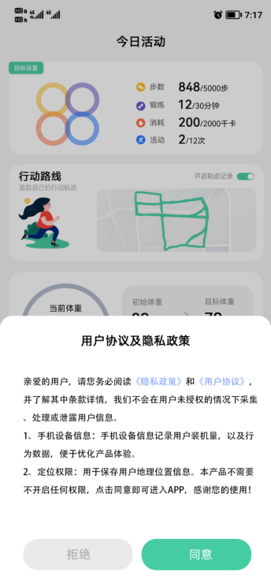
l 引导
填写性别、当前体重、目标体重。
数据通过左右滑动刻度尺调整（可也不做刻度标识，仅滑动调整）。
名称 | 刻度说明 | 填写时候数据默认值 |
年龄 | 1刻度为1岁 | 18岁 |
身高 | 1刻度为0.1厘米 | 170厘米 |
体重 | 1刻度为0.1公斤（斤） | 初始和目标均为50公斤 |
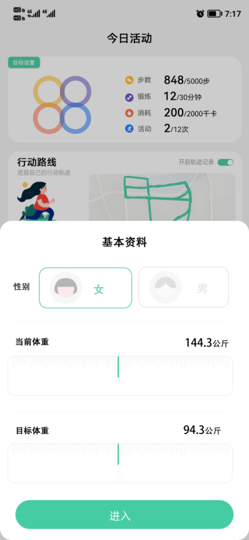
默认为全部显示，除了今日活动外的全部卡片都可以隐藏。
名称 | 首页卡片显示内容 | 备注 |
今日活动 | 将步数、锻炼、消耗、活动次数的当前和目标数据 | |
行动路线 | 无数据，仅展示图片 | |
体重记录 | 显示当前进度圈、完成度、初始和目标体重以及记录按钮 | |
今日饮食 | 今日摄入量、最后一次记录时间 | |
今日距离 | 今天的步数以及消耗的热量、今日0时至现在时间 | |
身体档案 | 显示最后一次记录的内容：类型、数值、最后一次记录时间 | |
运动记录 | 1. 室外跑步、室外跑步、骑行、健走、爬山显示：运动类型、最后一次运动的公里数、最后一次运动的时间 2. 瑜伽、跳绳显示：运动类型、最后一次运动时长、最后一次运动的时间 | |
喝水记录 | 今日喝水量、最后一次记录时间 | |
情绪状态 | 当前心情图标和记录文字 |

l 编辑卡片
可通过编辑卡片调整顺序和是否显示
切换卡片页面共分为两个部分，上半部分为显示在首页的内容，下半部分为不显示的内容，点击按住即可上下拖动卡片调整顺序和是否显示。
拖动时，被选择的条目显示为灰色。
将步数、锻炼、消耗、活动次数集合在同一区域展示，更直观的表现出当前的运动状态。
展示内容包括当前数值、目标数值、以及图标。
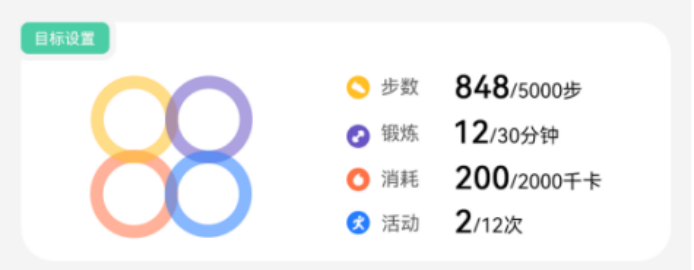
l 点击卡片可进入记录页面，在页面中可切换四种数据，此处数据不可修改和删除。
l 展示方式和现有的数据相同，点击周年月，切换不同时段趋势，点击下方日期范围，则可弹出日历选择范围。
周：只能选择查看一周数据。
月：只能选择查看一月数据。
年：查看一年的数据，数据只显示12个月的内容。
l 点击修改目标，弹出目标管理（查看2.4弹窗)。
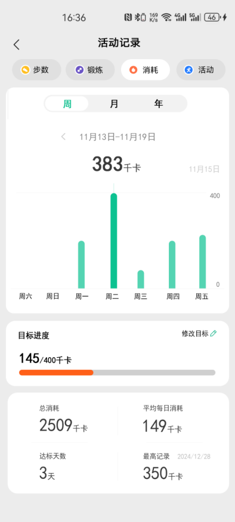
l 展示统计概览数据（统计选择的日期范围内数据）
序号 | 名称 | 显示内容 |
1 | 步数 | 总步数、平均每日步数、达标天数、最高记录（带日期） |
2 | 锻炼 | 总锻炼时长、平均每日锻炼时长、达标天数、最高记录（带日期） |
3 | 消耗 | 总消耗、平均每日消耗、达标天数、最高记录（带日期） |
4 | 活动 | 平均每日活动次数、达标天数 |
l 目标说明
序号 | 目标名称 | 说明 |
1 | 走路步数 | 每日走路步数，默认为5000步，显示为xxx步/天，最多50000步。调整刻度为1000. |
2 | 目标体重 | 可切换公斤和斤，默认为50公斤，在设置中切换，最多300公斤（600斤）。调整刻度为0.1。 |
3 | 走路距离 | 每日走路距离，默认为3000米，显示xxx米/天，最多50000米，调整刻度为500。 |
4 | 热量消耗 | 每日热量消耗,默认为300千卡，显示xxx千卡/天，最多2000卡路里，调整刻度为10。 |
5 | 锻炼时长 | 每日锻炼时长（步行+运动），默认为25分钟，显示xxx分钟/天，最多1440分钟。调整刻度为1。 |
6 | 活动次数 | 每日活动次数，默认为12次，显示xx次/分钟，最多24次。调整刻度为1。 |
l 调整数值
点击条目弹出调节数值弹窗，可上下滑动调整数值，点击确认保存即可。
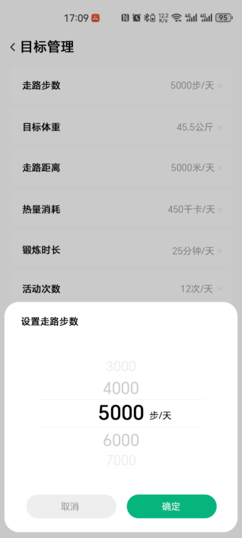
所有弹窗形式展示
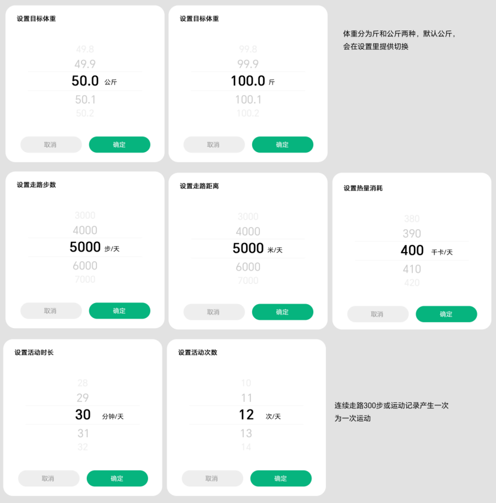
老版本的我的轨迹功能，进入功能获取后台权限、通知权限后，可根据实际位置结合地图，实现画出轨迹，记录起点、终点以及中间停止点的功能。
在通知中显示当前轨迹记录中状态，点击通知进入应用轨迹记录页面相应页面，进行操作。
后续应该可以制作播放轨迹的功能（需要埋点测试数据），有可能的话，可以将轨迹查看授权给他人账号远程查看。
l 行动路线页面
包含功能用法说明，点击地图中间开始按键开始，此时可弹窗获得权限。
l 开始轨迹追踪
- 追踪中
如果记录中，页面会事实刷新位置并绘制轨迹，如果停留超过30s，则会记录停留时间。状态会在通知中显示。
地图可用手指滑动，并使用定位按钮，定位当前位置。
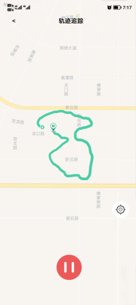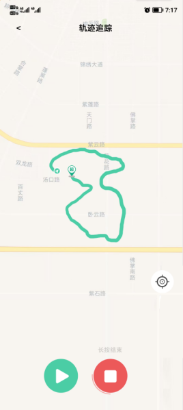
- 中止
暂停追踪后，不再记录，但在轨迹中会显示中止标志，并记录到历史中。
轨迹会出现两条，新的一条开启会出现继续标志。
状态会在通知中显示。
- 关闭轨迹追踪
需要长按关闭，无需确认，暂停后回到轨迹追踪页面，并提示当前轨迹已保存，可在记录中查看
l 轨迹历史记录
-记录条目
显示历史记录，按月展示所有的条目，下滑可看到下一年的数据，同时可通过右上角切换年份。条目显示内容为：日期、开始结束时间、时长、距离。
-记录详情
点击可查看历史记录
基本信息：日期、开始结束时间、时长、距离。
地图信息：包括实时地图，起点、终点、停留点、中止点（指的是手动暂停点，无信号不算，直接不画就行）、继续点标志（同暂停点操作）
详细轨迹：起点、终点、停留时间、中止和继续时间以及对应的位置。（最少会有起点终点两条数据展示）
-删除记录
在详情页右上方，可删除当前记录，需要确认：是否要删除当前轨迹？删除、再想想。
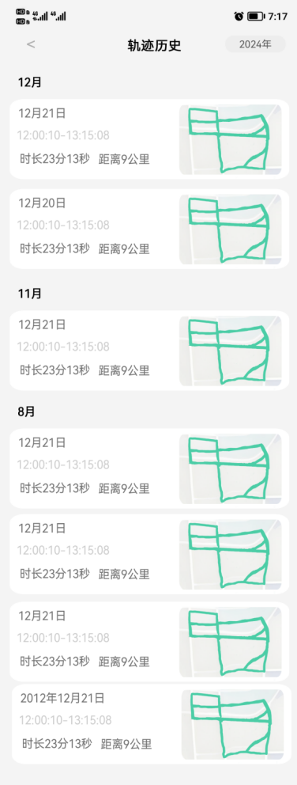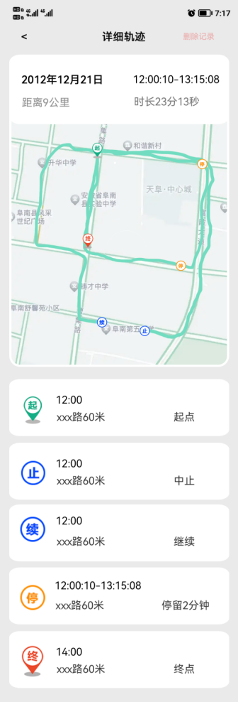
l 首页入口
显示初始、当前、目标体重、以及最后一次的记录时间，进度圈表示当前体重和目标体重的差距，需要显示目标的达成率。
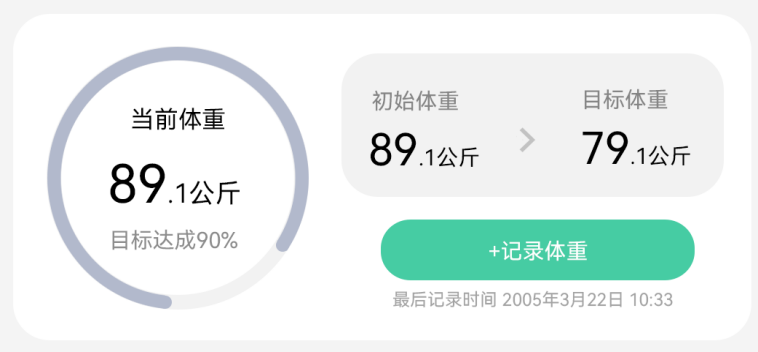
l 记录体重
点击记录按钮，弹出记录弹窗。
点击首页记录体重按钮，弹出记录，修改时间和体重后，进行保存。
时间默认为当前时间日期，若调整时间，可点击时间栏，弹窗后上下滑动日期和时间，确定后进行选择并关闭时间弹窗。
 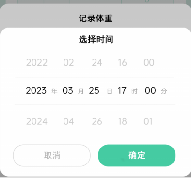
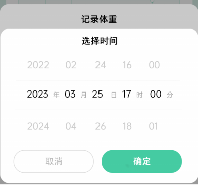
l 体重趋势
点击卡片进入体重趋势页面（我的页面点体重同样可进入）。
体重趋势页面可查看目标进度、初始当前目标的展示和修改、趋势、’信息概览，在此页面可跳转到体重日历，在日历页面可进行体重的管理和查看。
-目标进度
已坚持多少天：从使用软件开始算。
共减重（增重）多少公斤：初始体重和现在相减得出
距离目标：当前和目标的差距
进度完成百分比：将差距换算为距离目标的百分比
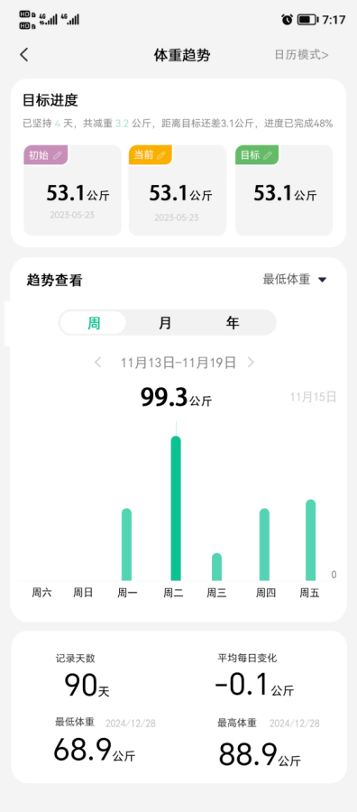
- 体重趋势页面
1) 目标调整
跳转目标调整页面，见目标调整。
2) 趋势查看
根据周月年展示当前体重趋势，筛选方式为最低体重、最高体重、平均体重、最早时间、最晚时间5种显示方式，切换后显示在日历中的体重会按每日数据排列。若无数据则显示为空。
筛选模式默认是最低体重，修改后保存当前调整方式。
筛选方式 | 说明 |
最低体重 | 每日体重最低的一次记录 |
最高体重 | 每日体重最高的一次记录 |
平均体重 | 每日平均体重 |
最早时间 | 每日最早一次记录 |
最晚时间 | 每日最后一次记录 |
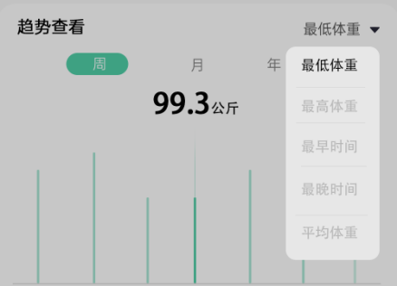
3) 查询时段调整
点击周年月，切换不同时段趋势，点击下方日期范围，则可弹出日历选择范围。
周：只能选择查看一周数据。
月：只能选择查看一月数据。
年：查看一年的数据，数据只显示12个月的内容。选择年后，最早时间和最晚时间的选项不可点击。
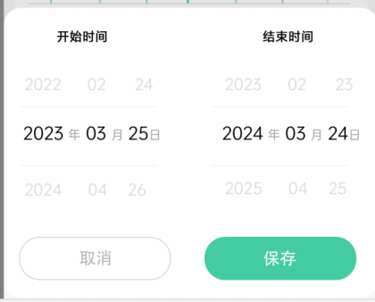
4) 信息概览
展示的信息类型，总体概览，根据选择的时间段进行筛选区域内数据
名称 | 说明 |
记录天数 | 第一次记录到时间终止所有有记录的天数 |
最高体重 | 最高的一次体重，需要注明时间 |
最低体重 | 最低的一次体重，需要注明时间 |
平均每日变化化 | 每日距前日变化幅度求出的平均值 |
l 日历模式功能
日历中显示每天的体重记录情况，并可切换不同日期，显示不同的日期的记录。
1) 需要进行筛选，同趋势筛选方式，默认最低体重。
2) 记录列表按时间先排序，最新的排在嘴上，显示记录的时间、体重以及与上次时间对比变化的百分比，减少为-0.0%，增加为+0.0%，持平则使用灰色字体显示：与上次持平
3) 若无记录则显示还没有数据
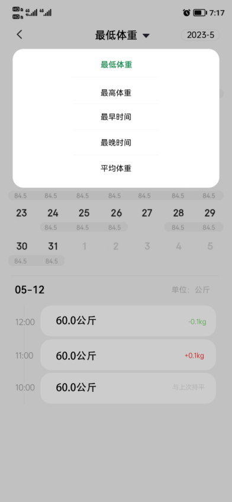
4) 修改和删除记录
点击记录列表，弹出修改删除弹窗，删除时需二次确认。
二次弹窗，删除在左，取消在右，避免用户习惯性点击删错内容。
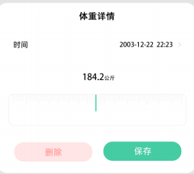
首页饮食日记入口进入。
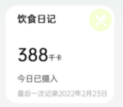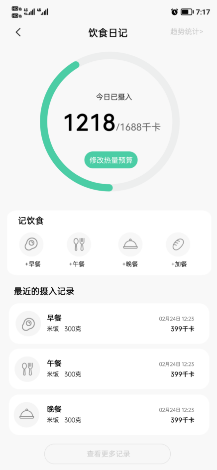
l 当日饮食记录
展示今日摄入的热量，进度圈表示当前卡路里/每日摄入预算的进度。
l 每日摄入预算
即目标摄入热量，点击修改弹窗进行设置。
热量预算设置共分为两种，一是根据目标体重按计算公式预算热量，二是用户手动输入，默认根据目标体重预算（轻体力劳动）。
1) 根据目标体重预算
用户需根据自己的当前的运动量选择不同的状态，根据状态不同计算热量消耗。
状态热量消耗计算方式为：基础的代谢率消耗x不同倍数，各种状态下的热量消耗
名称 | 说明 | 倍数 | 备注 |
基础代谢率 | 1.0 | 基础代谢计算结果，其他热量计算以此为基础。（不作为选项） | |
无体力劳动 | 几乎不运动 | 1.2 | |
轻体力劳动 | 工作学习、偶尔运动 | 1.375 | |
中体力劳动 | 常常运动、每周3-5天 | 1.55 | |
强体力劳动 | 每天运动、每周6-7天 | 1.72 | |
重体力劳动 | 强度运动,长时间运动或体力劳动 | 1.9 |
计算目标基础代谢率的公式
男性：基础代谢率计算公式:10*体重(公斤)+6.25*身高(厘米)-5*年龄(年)+5(千卡/天)
女性：基础代谢率计算公式:10*体重(公斤)+6.25*身高(厘米)-5*年龄(年)-161(千卡/天)
例子(50岁女性，身高: 160厘米，体重: 60公斤): 10*60+6.25*160-5*50-161=1189千卡
备注：计算需要使用到年龄和身高，如果之前没有填写，在此弹窗前，需要填写年龄身高信息。
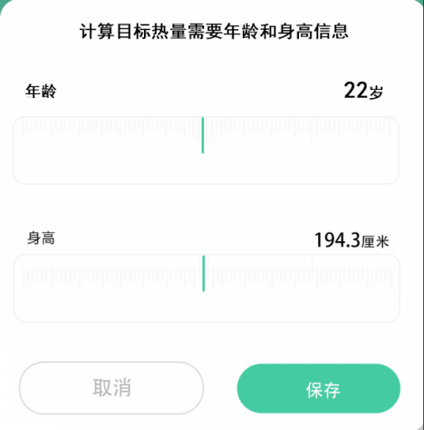
2) 手动输入
三角下拉切换到自定义窗口，手动输入即可。
l 记饮食
记饮食先要选择不同的饮食类型，分为早餐、午餐、晚餐、加餐4种，点击进入记录页面相对应的记录页面，在记录窗口同样可做类型的修改。
记录时候用户可选择时间、食物类型、热量、重量，并根据每百克所含热量计算出总热量显示。
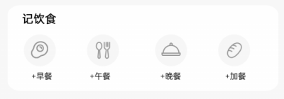
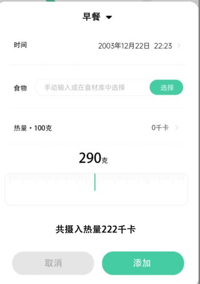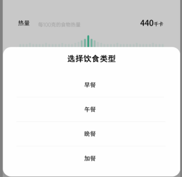
1) 时间
默认为记录当前时间，用户点击弹出时间窗口可做修改。
2) 食物
食物手动输入和选择食物。
手动输入食物后，需再手动输入热量值。
选择食物则跳转热量查询页面，见章节4.6，选中食物后返回带入食物和100克所含卡路里。
3) 热量
若选择食物，则自动带入热量，可手动输入、修改。若自定义食物，则需要手动输入。食物为空和自定义时，默认数值为0。
输入和修改时直接在窗口弹出数字键盘即可。
4) 重量
通过滑动调节杆调整热量。
l 最近摄入记录
显示最近10条的摄入热量记录，按最近的日期排序，如有记录则可点击查看更多记录，跳转到记录日历，若无记录则显示无数据。
记录中显示用餐类型和图标、食物、克数、时间、以及摄入的热量。
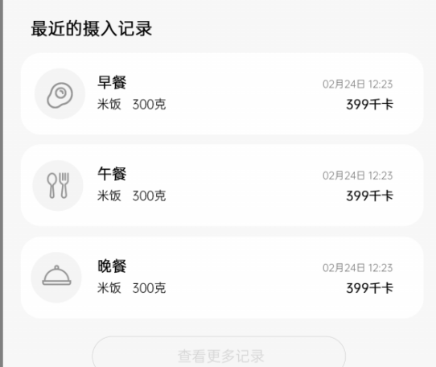
l 更多记录（跳转到日历模式查看）
通过日历模式查看，日历中包含当日的完成情况（依照当时的热量预算为准）。选择日期展示当日记录、上下滑动可查看他日信息，等同于切换日历。
展示的包含日期、时间、类型、食物、热量。
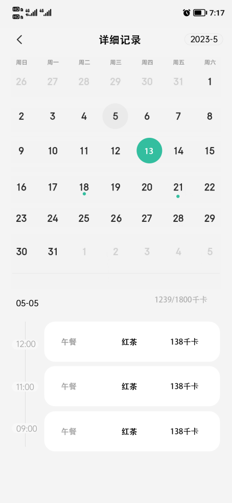
l 删除或修改记录
在饮食日记及详细记录界面，点击记录弹窗，可直接进行修改或删除，删除时需二次确认
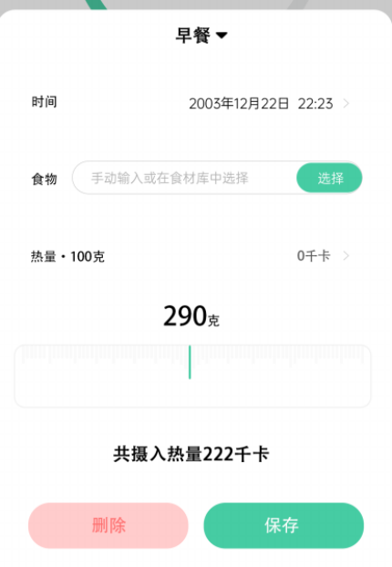
目标进度
l 趋势概览
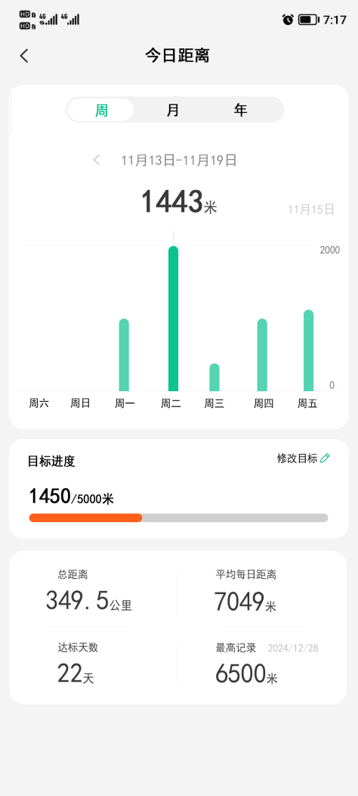
l 目标进度
点击弹窗修改目标（通用弹窗））
l 显示信息内容为：总距离、平均每日距离、达标天数、最高记录（带日期）
首页运动记录页面进入页面。
进入后默认为全部运动信息，用户可点击标题三角箭头切换到单个运动，切换后展示单个运动信息（去除运动占比即可）。
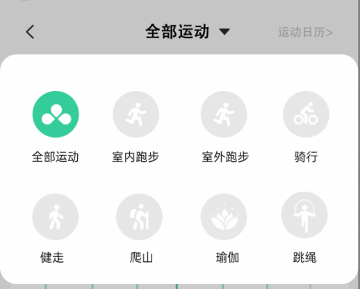
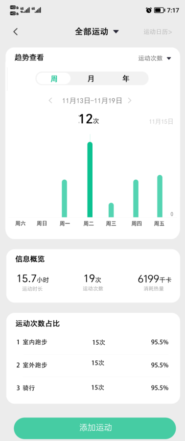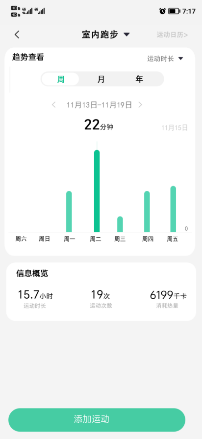
l 趋势查看
趋势展示方式与体重等趋势相同， 增加切换按钮，查看运动时长、运动次数、消耗热量（各运动热量消耗见章节3）
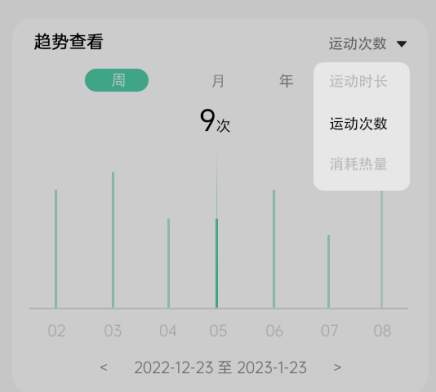
l 信息概览
信息概览展示时间范围内（周月年）的运动总时长、总次数、总热量。
l 运动占比
当前时间范围内的各种运动的所占比例，跟随切换的运动时长、次数、消耗热量切换成不同数据的占比。
l 添加运动
点击添加运动按钮，跳转到添加界面。
添加的数据类型
数据类型 | 说明 | 备注 |
运动类型 | 室外跑步、室内跑步、骑行、健走、爬山、瑜伽、跳绳 | |
运动时长 | 选择运动时长 | |
距离 | 选择运动的公里数 | 瑜伽、跳绳不显示这行 |
运动日期 | 运动的日期，默认当前时间 | |
开始时间 | 运动时间，默认当前时间 |
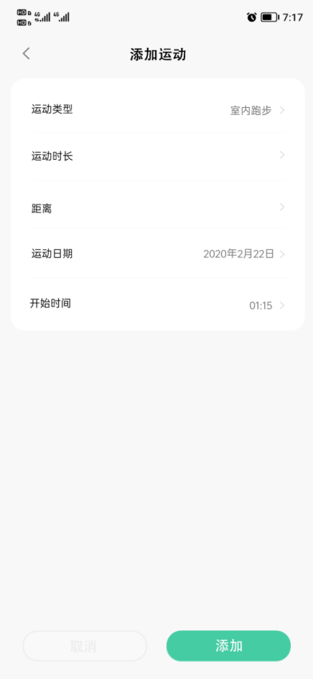
l 热量消耗计算
计算热量并显示在热量界面
类型 | 计算方式 | 备注 |
室外跑步 | 体重（公斤）x距离（公里）x1.036x0.8 | |
室内跑步 | 体重（公斤）x距离（公里）x1.036x0.8 | |
爬山 | 体重（公斤）x距离（公里）x1.036x1.2 | |
骑行 | 体重（公斤）x距离（公里）x1.036x0.5 | |
健走（走路） | 体重（公斤）x距离（公里）x1.036 | |
瑜伽 | 每小时约消耗150千卡热量 | |
跳绳 | 每分钟消耗热量=（10.9 x 体重（公斤）x 3.5）÷200 |
l 运动日历
展示当日全部运动，如果当日有记录，需要标记。若当日无记录则不标注，并在列表中显示无记录。
1) 显示内容
运动类型 | 显示内容 |
室内、室外跑步、骑行、健走、爬山 | 时间、运动类型、距离、时长、消耗热量、配速 |
瑜伽、跳绳 | 时间、运动类型、时长，消耗热量 |
2) 修改删除记录
点击列表，进入运动详情，可进行修改和删除操作，删除需要弹窗确认是否删除记录。
 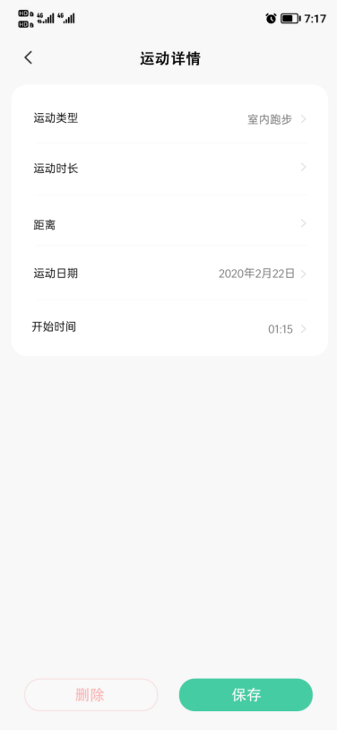
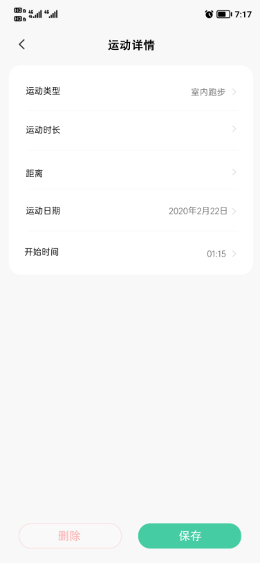
距离输入弹窗
微步运动做法相同，仅更改了展示方式，包含身高、胸围、腰围、臀围、肩宽、上臂围、大腿围、小腿围。
进入档案页面，展示为整体概览，点击不同列表进入不同的数据概览。
l 添加数据
添加数据有两种方式有两个位置，一是数据总览，另一个是详细数据。
1) 总览页面添加，点击添加后弹出窗口，需选择数据类型（默认为身高），点击后弹出选项选择类型，点击选择切换。
 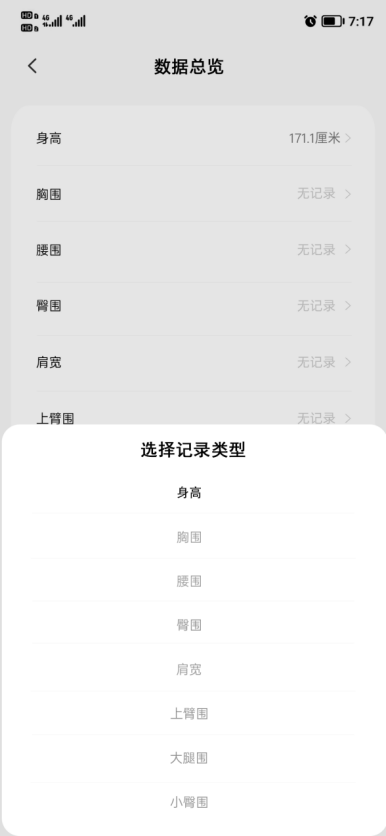
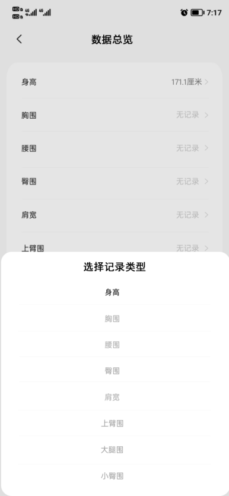
2) 详细数据页面添加
直接添加当前类型数据即可。
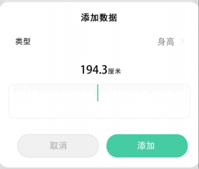
l 详细数据页面
1) 趋势查看
按周年月展示身体档案数据，此处可切换成其他数据类型。
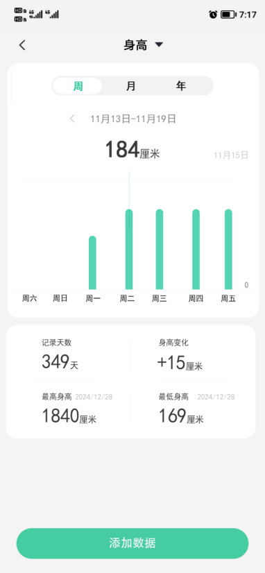
2) 信息概览
数据 | 显示内容 |
身高 | 记录天数、最高身高（注明时间）、最低身高（注明时间）、身高变化 |
胸围 | 记录天数、最大胸围、最小胸围、胸围变化 |
腰围 | 不同类型更改名称 |
臀围 | |
肩宽 | |
上臂围 | |
大腿围 | |
小腿围 |
在趋势界面同样可以添加数据，添加的类型默认选择为当前页面的数据，不可调整，避免用户分不清数据添加到哪里了。
3) 全部记录页面
按月展示所有的条目，下滑可看到下一年的数据，同时可通过右上角切换年份。
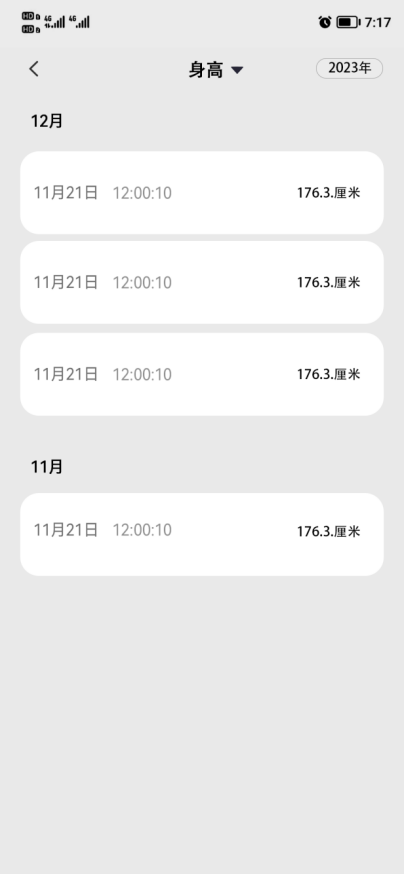
4）修改删除数据
点击条目进入详情，可进行删除和修改操作。删除需要二次确认。
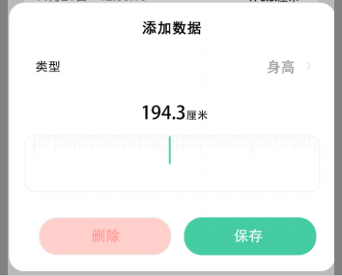
喝水功能基本布局与喝水时间类似，但简化了目标，设置仅需直接设置即可。
仅保留基础功能，选择杯型和喝水量，喝水时间均在喝水记录弹窗显示。
首页上方显示今日喝水量及目标进度圈。
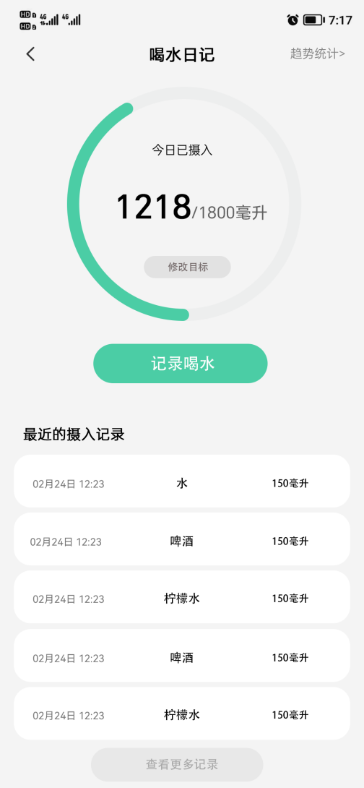
l 添加喝水记录
点击记录喝水添加喝水记录，时间默认为当前、默认喝水量为150毫升，用户调整后保存使用的喝水量，点击添加记录。记录成功使用toast提示，喝水记录已添加。
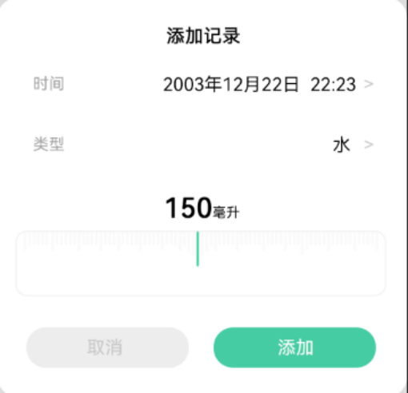
1）时间日期修改
点击时间可切换日期和时间，默认为当前时间。
2）类型修改
点击类型跳转选择类型页面，可进行搜索添加，点击为选中并返回添加页面。
操作同记录饮食操作。
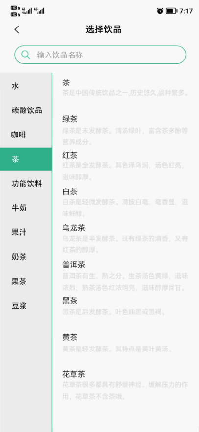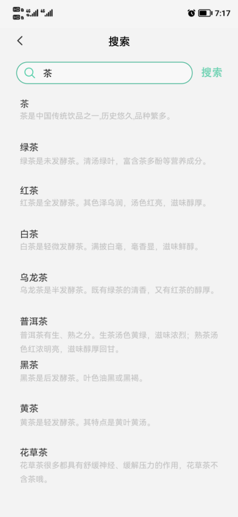
l 喝水目标设置
点击修改按钮，跳转到新页面调整，不设置最大喝水量。
提示内容为：健康成年人每日推荐喝水量在1500-2000毫升之间，可根据天气、工作、运动等情况适量增加或减少喝水量。

l 喝水记录
喝水记录下方为喝水记录，同样为最多仅记录最近10条，更多则需要点击按钮跳转日历查看。
展示内容为日期时间、类型、喝水量
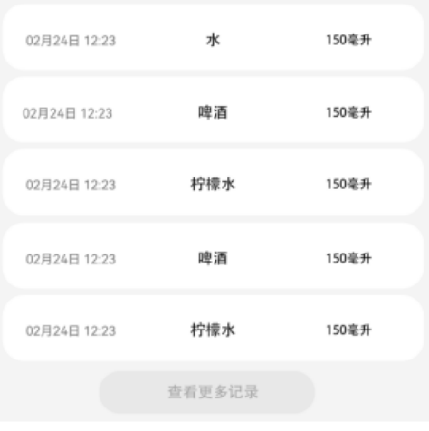
l 编辑删除记录
点击记录查看喝水详情，在喝水详情内可直接调整或删除记录，删除需要二次确认。
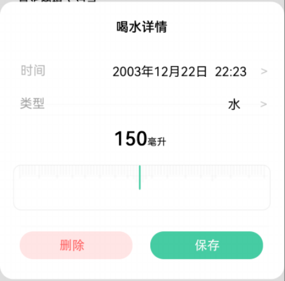
l 更多记录（日历模式）
记录与其他日历模式基本相同，显示内容时间、类型、喝水量。如果有喝水的情况，用绿色的点表示即可。
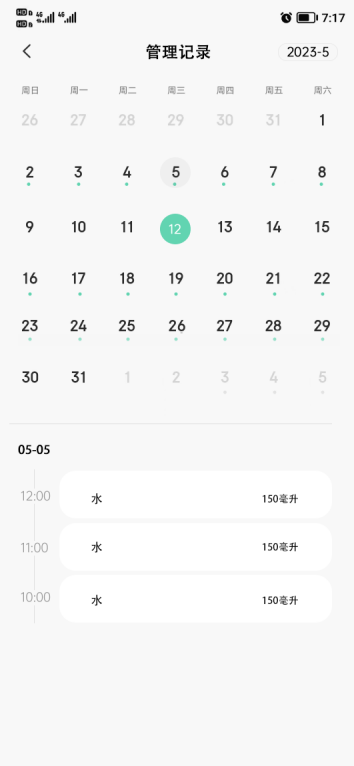
l 趋势统计
趋势与其他页面一样。
信息概览种展示时间区间内的日均摄入量、完成率、达标天数、最多摄入量（标注日期）。
此处可跳转到日历模式。
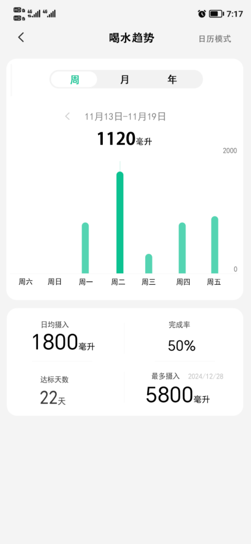
从首页情绪状态页面点击进入页面。
l 情绪状态页面
情绪状态页面同样为日历模式，一天可记录多条情绪，在日历中显示最新记录的情绪，点击当天可查看当天所有的记录列表。
情绪列表显示内容为时间、情绪图标、文字说明、因为什么图标（若不记录则不显示）
、记录的内容（若不记录则不显示）
点击列表可进入状态详情，进行编辑和删除（删除需要确认）
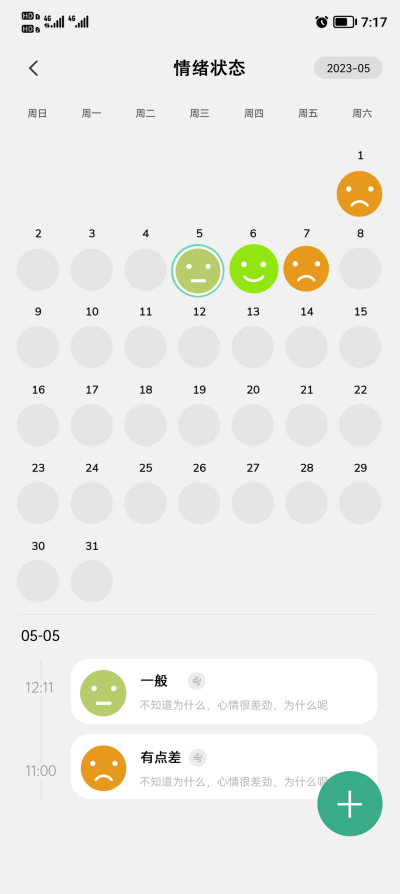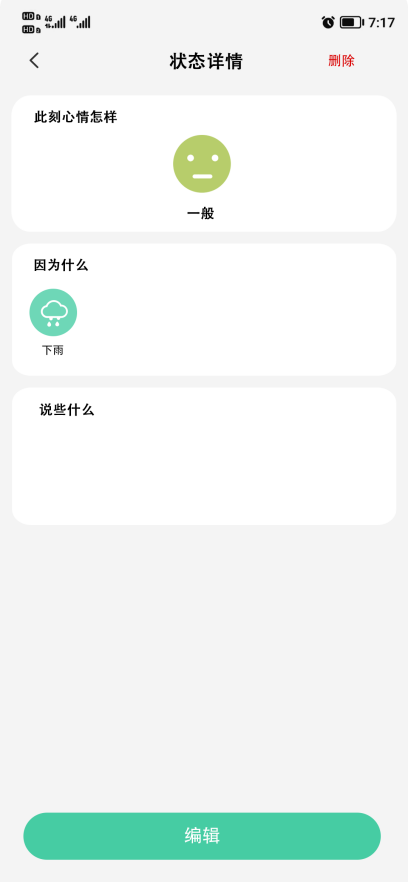
l 记录和修改情绪（同一个界面）
1） 点击添加按钮跳转添加页面。在添加天面可选择当前的情绪，情绪共5种，默认位置在一般表情。
糟糕、伤心、一般、开心、棒极了
2） 选择因为什么
默认不选择，用户通过点击选择不同的原因，可选择多个。
3） 说些什么（记录文字）
用户可些可不写，文字不限制字数。
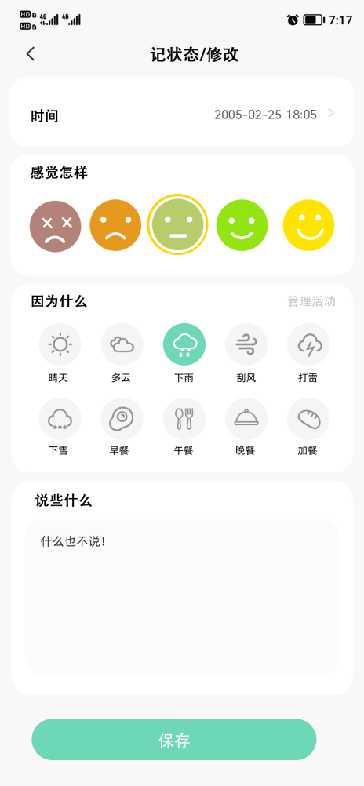
l 管理活动
点击管理活动，可管理不同的情绪原因。
首页仅显示10个，用户可以在管理页面点击加减按钮确认是否显示在首页。
序号 | 类型 | |
1 | 默认显示 | 晴天、多云、下雨、刮风、打雷、下雪、早餐、午餐、晚餐、加餐 |
2 | 饮食 | 早餐、午餐、晚餐、加餐 |
3 | 天气 | 晴天、多云、下雨、刮风、打雷、下雪、 |
4 | 社交 | 爱人、亲人、朋友、同事、陌生人 |
5 | 健康 | 压力、失落、头痛、疾病、月经 |
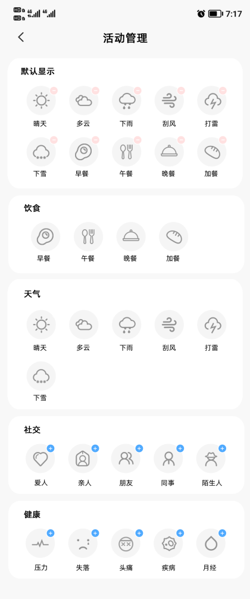
基本功能与微步运动相同，新增加了跳绳、瑜伽两种运动，这两种运动在运动首页显示累计时长，其他则显示累计公里数。
在屏幕下方目标和最后一次记录距离或者时间（跳绳瑜伽为时间，其他为距离）
点击目标跳转到目标设置页面，点击记录跳转到运动日历界面。
点击开始运动，跳转运动界面。
热量消耗计算公式见章节2.7热量计算条目
l 运动倒计时
开始运动时倒计时321数字，并带语音，321开始，同微步运动设计。
l 运动
倒计时开始后进入运动页面，暂时所有的界面都统一为一种形式。
l 显示内容说明
1） 跑步骑行健走爬山显示在圈内的信息为，当前的公里数。并在下方显示目标、热量消耗、运动时间、平均配速信息，以及实时地图，点击地图可跳转到全地图模式。
全地图展示显示内容为运动类型，时长、距离配速信息，用户可拖动地图，并能点击回到当前位置按钮恢复地图，全地图模式只能返回到运动主页才能暂停和退出。
2） 跳绳瑜伽圈内显示信息为时间，下方显示目标和热量。
3） 若有设置目标，则显示目标内容（距离、时间、热量），进度圈显示进度；若无则显示两条杠“--”，并显示满圈进度。
l 暂停结束运动
1) 暂停运动
点击暂停按键暂停运动，结束计时和距离，并弹出弹出开始和结束按钮。点击开始重新开始计时，结束则终止并保存运动。
2) 结束运动
长按结束运动按钮两秒可结束运动：点击结束按钮显示文字“长按结束”，长按显示进度条（顺时针旋转，完成退出）。结束时候保存数据，并返回运动首页。
当运动时间小于20s或运动距离小于100米，不保存数据，在结束时需提示不保留记录弹窗提示：“本次运动距离（时间）过短，将不会记录数据，是否确认结束运动？”此时可选择结束或继续运动。
标题最右侧按钮，弹窗后展示现有7种运动图标，长按可拖动顺序，点击图标切换到当前运动，并关闭弹窗。
绿色为显示当前选中的运动。
首页目标调整一栏进入。
调整设置运动目标和数值，选择后目标会显示在目标中，并会在运动页面提示。
默认为无目标。无目标时，调整一栏不展示。
l 目标选择
目标有无目标、距离、时间、热量目标4种选择。
注：瑜伽跳绳不显示距离目标。
l 数值
根据选择的目标不同，展示距离、时长、热量。距离默认为5公里、热量为100千卡、时长默认30分钟。
1) 选择预设数值

三种类型不同的预设数值
类型 | 预设数值 | 备注 |
距离 | 5/10/20 | 公里 |
时长 | 30/60/90 | 分钟 |
热量 | 100/200/300 | 千卡 |
2) 自定义数值
选择自定义，根据距离/公里、时长/分钟、热量/千卡目标选择不同单位，输入保存后设定完成。
l 运动记录
同条目2.9
我的页面主要为信息展示，包含个人信息、身体概况预览、汇总日历、热量查询、基础代谢查询、设置等功能。
我的页面个人信息区域显示头像、昵称以及坚持天数信息，坚持天数为第一次打开app可是计算时间。
因第一次无法设置昵称，因此我的页面展示的为默认昵称，名字为：“修改昵称”，头像为选择男女时候的默认头像。
点击整个区域进入个人信息的详细页面，可对个人信息进行修改。
头像为直接进入相册选择，性别为弹出导航男女选择选项即可。

昵称填写
年龄、身高、体重则弹出刻度尺滑动即可。
标题为修改的内容名称。
展示信息为当前身高、当前体重，基础代谢值、身体质量指数
点击身体概况中身体质量，跳转到身体质量页面
l 计算公式
体重BMI指数计算方法为体重除以身高的平方，单位为公斤/米²
注：与首页计算分开，首页计算为根据现有体重和身高直接计算得出，此处提供的为一种计算方式。
状态 | 色值 |
过轻 | #97a7c7 |
正常 | #5bdc70 |
偏胖 | #f9cf5f |
肥胖 | #ff5317 |
首次进入页面需要填写身高和体重，点击计算弹出计算结果和信息，并用光标指明刻度位置，退出页面时保存上次的计算结果。
身体质量指数不显示在首页，身体概况中，首页的身体概况为根据体重身高自动计算，如未填写身高，点击此处需要弹窗填写，才能进入功能。
l 计算结果说明
数值范围 | 身体状态 | 说明 |
低于18.5 | 过轻 | 体重指数过低可能会带来一定的健康风险。 如果您的体重指数较低，需要调整饮食以增加体重，以便让您的BMI处于正常范围。每天的目标是比平时多摄入250到500卡路里，但远离垃圾食品和苏打水等的空卡路里食物，因为这些食物不能提供良好的营养。 另外将饮食措施与力量训练相结合以增强肌肉有助于提高BMI值。 |
18.5-23.9 | 正常 | 健康的体重有助于降低人们患严重健康状况的风险，意味着你接近你的健身目标。 |
24-27.9 | 偏胖 | 体重指数超标可能会增加患心血管疾病的风险。需要考虑通过健康的饮食和健身来改变生活方式，以改善你的健康。 |
28以上 | 肥胖 | 肥胖人群患许多疾病和健康状况的风险增加，包括心血管疾病、高血压、II型糖尿病、呼吸问题等。 尽量通过健康的饮食和健身来改变生活方式，以改善您的整体健康和生活质量。 |
l BMI
点击右上角感叹号弹出计算信息（说明文档见txt文本）。
汇总体重、饮食、运动、身体状态数据，可在标题中进行切换。
列表中需标识数据类型，其他操作展示与其他页面日历模式数据相同。
展示本地食物热量表，食物列表及其100g所含热量，可进行切换分类查看和搜索。
点击搜索跳转到新的页面，输入文字后点击搜索，按名称进行模糊搜索。
搜索结果页，如有结果则排列，无则显示无数据图标。

计算目标基础代谢率的公式
男性：基础代谢率计算公式:10*体重(公斤)+6.25*身高(厘米)-5*年龄(年)+5(千卡/天)
女性：基础代谢率计算公式:10*体重(公斤)+6.25*身高(厘米)-5*年龄(年)-161(千卡/天)
例子(50岁女性，身高: 160厘米，体重: 60公斤): 10*60+6.25*160-5*50-161=1189千卡
状态热量消耗计算方式为：基础的代谢率消耗x不同倍数，各种状态下的热量消耗
名称 | 说明 | 倍数 | 备注 |
基础代谢率 | 1.0 | 基础代谢计算结果，其他热量计算以此为基础。（不作为选项） | |
无体力劳动 | 几乎不运动 | 1.2 | |
轻体力劳动 | 工作学习、偶尔运动 | 1.375 | |
中体力劳动 | 常常运动、每周3-5天 | 1.55 | |
强体力劳动 | 每天运动、每周6-7天 | 1.72 | |
重体力劳动 | 强度运动,长时间运动或体力劳动 | 1.9 |
进入后所有信息为空，需要重新填写，填写后计算出结果并保存页面计算结果。
点击右上角，查看说明。
4.7. 设置
4.8 体重单位切换
点击切换公斤和斤。